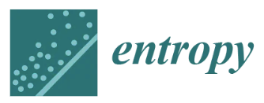

Complexity of AI - Joint Special Issue in Entropy and Complexities
Selected abstracts accepted at the NSIA 2026 satellite will be invited to contribute to a joint special issue "Complexity of AI", which is guest edited by Dr. Siew Ann Cheong (NTU), Dr. Ling Feng (A*STAR), and Dr. Lock Yue Chew (NTU) for the open access journals Entropy (ISSN 1099-4300, IF 2.0) and Complexities. This special issue will feature papers exploring the complexity of AI models from diverse perspectives, including methods, theories, applications, and empirical studies. You can find the full scope of the special issue for Entropy and Complexities.
Topics covered include:
- Emergence and phase transitions in AI/ML models
- Statistical mechanics of neural networks
- Dynamics of neural networks training and inference
- Power laws in AI/ML models
- Self organization in neural networks
- Energy based models and analysis
- Reinforcement learning in multi-agent systems
- Adaptive and causal ML and AI
This Special Issue is organized in conjunction with the Focused Session entitled "Complexity of AI" at the Asia-Pacific Summer School and Conference on Networks and Complex Systems (APCNCS) 2026, held in Singapore.
